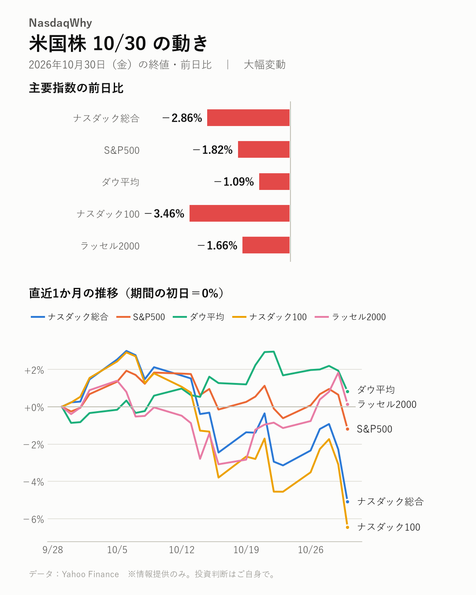
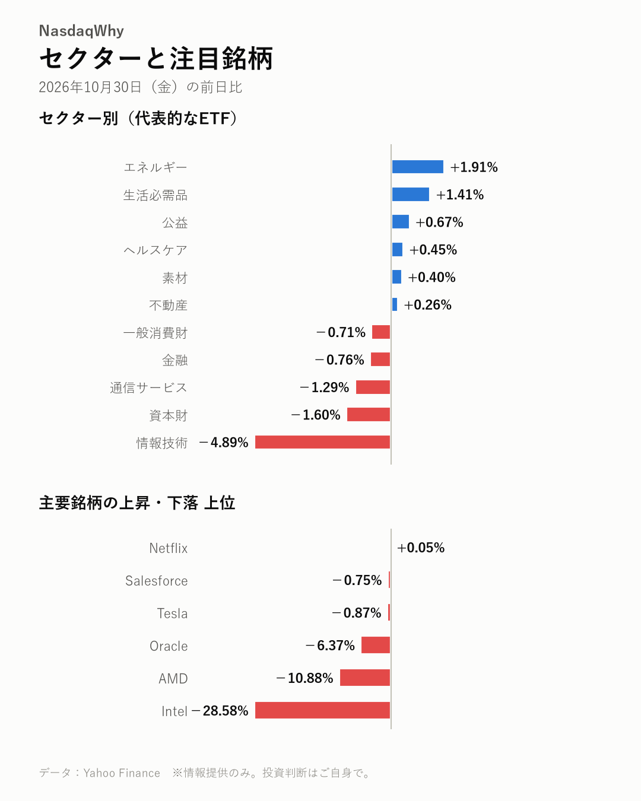

10/30の米国株：インテルの弱い見通しをきっかけに半導体株が売られ、ナスダック総合は-2.86%と下落しました。
2026年10月30日（金）の米国市場（日本時間の翌朝更新） ｜ 大幅変動

主要指数
| 名前 | 終値 | 前日比 | 騰落率 |
|---|---|---|---|
| ナスダック総合 | 25,437.00 | -747.72 | -2.86% |
| S&P500 | 7,580.07 | -140.32 | -1.82% |
| ダウ平均 | 51,770.31 | -572.25 | -1.09% |
| ナスダック100 | 28,384.85 | -1,017.66 | -3.46% |
| ラッセル2000 | 2,811.84 | -47.38 | -1.66% |
なぜ動いた？
- インテルがパソコン市場の減速を背景に弱い業績見通しを示し、株価が-28.58%と急落したと報じられました。（出典：CNBC Earnings、Yahoo Finance）
- インテルの警告が半導体株全体に動揺を広げ、AMDも-10.88%と大きく下落したと報じられました。（出典：TIKR.com）
- インテルとアマゾンの決算を受け、AI向けハードウエア関連株が売られたと報じられました。（出典：Yahoo Finance）
- 半導体株の上昇に息切れ感が出ているとの個人投資家の見方も伝えられました。（出典：Stocktwits）
深掘り：大きく動いた背景
前日の米国株は、ハイテク株を中心に大きく下落しました。ナスダック総合は-2.86%、ナスダック100は-3.46%、S&P500は-1.82%、ダウ平均は-1.09%でした。きっかけとして報じられているのがインテルの決算です。売上高は市場予想を上回ったものの大きな赤字が注目され、パソコン市場の減速を背景とした弱い業績見通しも示されました。株価は-28.58%と急落し、アナリストの反応は分かれていると伝えられています。イスラエルに関連する混乱を重荷として挙げる報道もあります。売りはインテルだけにとどまらず、AMDが-10.88%、ブロードコムが-5.48%、マイクロンが-5.30%と下落しました。インテルとアマゾンの決算がAI向けハードウエア関連株の重荷になったとの報道もあります。市場では、AI向け販売の伸びがパソコン市場への不安を補えるかが意識されています。AMDについては、AI企業間で資金が循環する構図への懸念も指摘されています。一方、エネルギーや生活必需品など上昇したセクターもあり、売りは一様ではありませんでした。
セクター
情報技術が-4.89%と下げが目立ち、資本財も-1.60%と下落しました。一方、エネルギーは+1.91%、生活必需品は+1.41%と上昇しました。
- 騰落率の高い順：エネルギー +1.91%、生活必需品 +1.41%、公益 +0.67%
- 騰落率の低い順：情報技術 -4.89%、資本財 -1.60%、通信サービス -1.29%

注目銘柄
インテルは-28.58%と急落し、大きな赤字や弱い見通しが注目されたと報じられました。AMDは-10.88%、ブロードコムは-5.48%、マイクロンは-5.30%、NVIDIAは-4.22%と下落しました。
- 上昇：Netflix（NFLX）+0.05%、Salesforce（CRM）-0.75%、Tesla（TSLA）-0.87%
- 下落：Intel（INTC）-28.58%、AMD（AMD）-10.88%、Oracle（ORCL）-6.37%
関連市場
| 名前 | 終値 | 前日比 | 騰落率 |
|---|---|---|---|
| 米10年債利回り | 4.929% | -0.060pt | ― |
| ドル円 | 157.80 | -0.03 | -0.02% |
| 金先物 | 3,898.90 | -132.50 | -3.29% |
| 原油先物(WTI) | 104.12 | +2.12 | +2.08% |
| ビットコイン | 77,198.21 | -576.90 | -0.74% |
米10年債利回りは4.929%に低下し、ドル円はほぼ横ばいでした。金は-3.29%、ビットコインは-0.74%と下落し、原油は+2.08%と上昇しました。
今週の振り返り
- ナスダック総合：週間 -2.00%
- S&P500：週間 -0.57%
- ダウ平均：週間 -0.85%
- ナスダック100：週間 -1.98%
- ラッセル2000：週間 +1.29%
今週の米国株は、主要指数で明暗が分かれました。週間の騰落率は、ナスダック総合が-2.00%、ナスダック100が-1.98%、S&P500が-0.57%、ダウ平均が-0.85%と下落した一方、ラッセル2000は+1.29%と上昇しました。ハイテク株の比重が大きい指数の下げが目立つ形です。週の最終取引日には、インテルの弱い業績見通しをきっかけに半導体株が売られ、週間の成績にも影響しました。小型株が底堅かった理由については、明確な材料は見当たりませんでした。来週はアップルやAMD、パランティアの決算に加え、米中間選挙や月次の雇用統計が控えており、値動きの荒い展開を予想する見方も出ています。
今後の注目
- AMDの決算で、AI向け販売の伸びとパソコン市場への見方が注目されています。（TIKR.com、TipRanks）
- 来週はアップルやパランティアの決算も控えています。（Livemint、Opening Bell Daily）
- 米中間選挙と月次の雇用統計に市場の関心が集まっています。（CNBC Earnings、Livemint）
- 12/9（水） FOMC（米連邦公開市場委員会）の金融政策発表が控えています。（公式発表）
出典（見出し）
- CNBC Earnings：Intel stock plunges 21% as chipmaker blames PC slowdown for weak guidance（記事）
- Yahoo Finance：Intel (INTC) Stock Fair Value Falls After Mixed Analyst Reactions To Weak Guidance（記事）
- TIKR.com：AMD Just Dropped 11% in a Day as Intel’s PC Warning Rattles Chips. Is It Time to Sell, or Load Up?（記事）
- Yahoo Finance：Coherent Stock Fell 11% as Intel and Amazon Earnings Hit AI Hardware Stocks. Here’s Where the Stock Could Go（記事）
- Stocktwits：AMD Stock Slips Despite Wave Of Price Target Hikes – Retail Traders Say Chip Rally Is 'Starting To Look Exhausted'（記事）
- TIKR.com：AMD Stock Fell 11% in a Day Ahead of Its November 3 Report. Here’s Why Intel’s 78% Data Center Jump Matters More to AMD Than Its PC Warning（記事）
- TipRanks：AMD Earnings Preview: Can Surging AI Sales Calm PC Fears After 11% Stock Drop?（記事）
- Livemint：Wall Street week ahead: All eyes on US midterm elections, jobs data; earnings from Apple, AMD and Palantir also in focus（記事）
- Opening Bell Daily：Stock market week ahead: Apple and AMD lead 8 big reports（記事）
- CNBC Earnings：Cramer’s week ahead: Expect more volatility as tech earnings, midterms loom（記事）
データ：Yahoo Finance